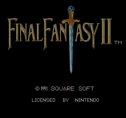
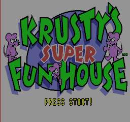

<div class="usnes_container">
  <div style="color:#FF0000;background-color:#000000;width:100%">
    <center>
      <h2>Team Rugby</h2>
      <h1>USNES - SNES Emulation</h1>
      coded by Urban Nilsson
      <hr>
      You are the ### vistitor since 970427
      <hr>
      <font color="#008080">
        The Project began in the late 1996. The First versions was programmed in  assembler. But  now I'm programming in C using DJGPP. The Emulator is in the early stages of development and has no optimization.So it's SLOOOOW!<br>
        Runs some demos though.
      </font>
    </center>
    <hr>
    <h3><b>Emulated so far:</b></h3>
    <font color="#DFDFDF">
      <ul>
        <li>Almost complete 65c816 instruction set</li>
        <li>Mode 0, 1, 3 and 7 (<font color="00FF00">partial</font>)</li>
        <li>All the General DMA Channels</li>
        <li>NMI, IRQ and COP Interrupts</li>
        <li>APU is ignored</li>
        <li>RAM/CGRAM</li>
        <li>LoROM</li>
      </ul>
      <hr>
      <center>
        Screen Shots from USNES
        <p>
          </img>
          </img>
          <br>
          Final Fantasy II and Krusty's Super Fun House show a correct title screen
        </p>
      </center>
      <hr>
      <p>
        <font color="#FF0000">
          Download<a href="https://www.dropbox.com/s/6mirwin3c19n8w1/usnes01b.zip?dl=1"> USNES ver 0.01b</a><br>
          Download<a href="https://www.dropbox.com/s/7srl9cgrwvoh2o4/usnes01a.zip?dl=1"> USNES ver 0.01a</a>
        </font>
      </p>
      <p>
        <font color="#FF0000">
          Check out the <a href="usnes-history.html">Recent History</a> of USNES
        </font>
      </p>
      <p>
        <font color="#DFDFDF">
          I need more info on the diffrent snes graphic modes (0 - 7) <br>
          And I want suggestions on improvements.<br>
          I'll need all help I can get to reach my goal.
        </font>
      </p>
      <p>
        <font color="#FF0000">
          So Mail me! <a href="mailto:urban@kunudu.com">Urban Nilsson</a>
        </font>
      </p>
      <hr>
      <font color="#00FF00" size="2">
        <i>Last edited 970427</i>
      </font>
    </font>
  </div>
</div>